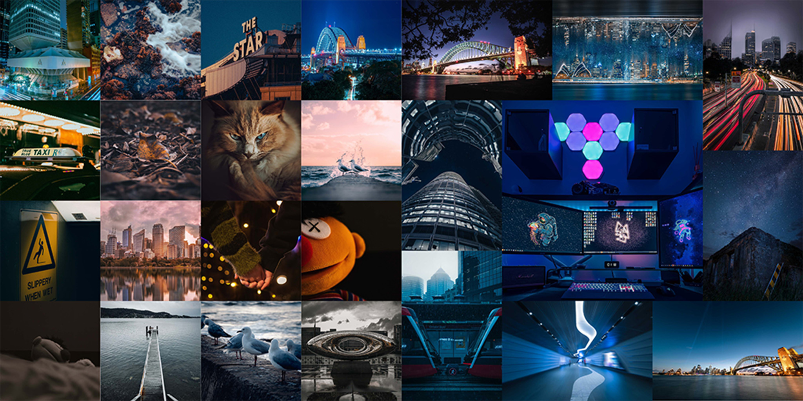

| Learning experiences (school) | Skills |
|---|---|
| Basic Japanese | |
| Graduated from high school in 2020 | Java |
| Database management | |
| Completed Diploma IT course in 2021 | Photography |
| DIY stuff |
High school life is between stressful and relaxing, I didn’t get too much homework after class and I had a part-time job in a restaurant. I only get nervous when exams come. Even though I passed all the exams in high school, my ATAR is terrible. I screwed up the math and physics exam so the ATAR is only about 65. After I graduated from high school, I went to diploma to try to get another way to get into UTS and I did it.
When I was 18, I got my first DSLR camera from my uncle, I started my photography life. I went to a lot of places inside and outside of Sydney to take photos and post them on my Instagram. Taking and editing photos can make me feel free and relaxed.
Before I graduated from high school, I didn’t learn any computer knowledge in school. At that time, all my IT knowledge is from the internet, I like IT stuff, and I want to develop some cool things in the future, so I decided to study IT in diploma and university.
